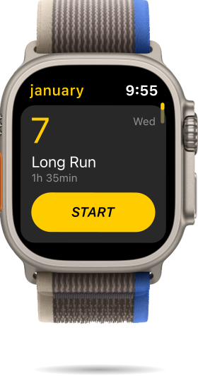
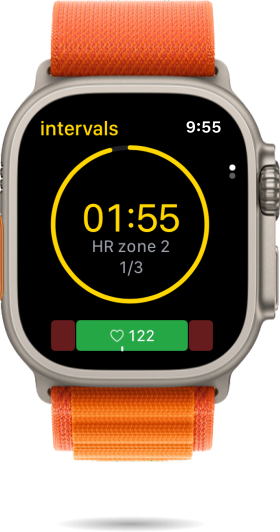

Case study · iOS + watchOS
RunPlan
A coach on your wrist — structured running plans, designed watch‑first.





A coach on your wrist — structured running plans, designed watch‑first.



Tuesdays are always intervals. No daily decision — no skipped runs.

A science‑backed engine — Foundation → Strength → Speed → Taper — explained in plain language.

Designed for feel — haptics mark intervals and milestones. Tested on real runs, two watches at once.